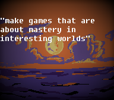

about Me Ben
The Bones Whisper Game is A Passion Project of Me Benjamin Westlake It has been a Game I have been working on as a hobby for
2 years now. But enough about the game I am a student at University of Utah studying Game Design and computer Science. I Love Speedrunning in Games I have gotten a sub 1:30 in Mario Odyessy
and have found speedrun glitches in GhostRunner. My love for speedrunning and movement very much shows in Bones Whisper with multipath rooms and leaving in speedrun tricks while also having
many advanced movement tricks. The Game also shows my great love for The Messenger by Sabotage Studio Merci Thierry Boulanger (its a Messenger Reference).
Most of my game creation experience is self taught in Game Maker Studio 2. I did end up making a game before this which was a really short wild west platformer based around wall jumping.
The wild west game was not very good but did give me good experience in game maker.
I did get to show off this Wild west game at a showcase at my highschool in 10th grade and being able to see people interact with your game and get involed and have fun is an amazing experience and is
What I strive for. The other Crazy Amazing experience is getting Bones Whisper on the front page of opera GX for a week receiving 19000 + plays on the games demo. On GXC I don't even have the speedrun record for my own game.


My Game Moto Allow mastery and depth in replayable games
| Head shots |
|
 |
Me aka I_Fishowner founder really cool guy and website designer Created Bones Whisper and uses his art as his profile picture every where. |